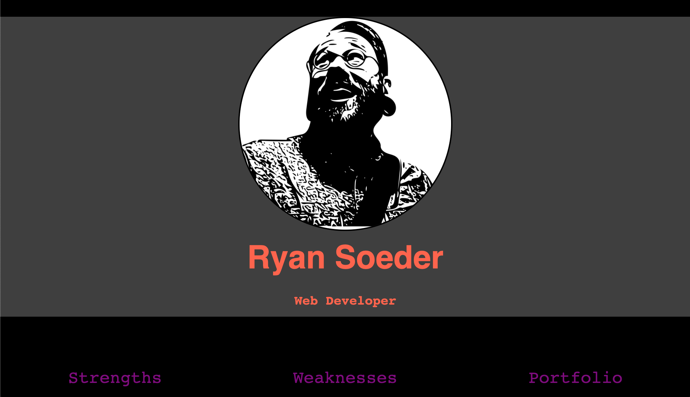

github
github
 linkedin
linkedin
 resume
resume
 email
email
Projects
-
 Cactus Flower Boutique
Cactus Flower Boutique
6/17/2020Website for a vintage shop in Louisville, KY. This was my first crack at web design for a client.
Learning focus: basic web aesthetics, hamburger button navigation, responsive design, when to use flexbox vs grid layouts, JavaScript lightbox and image carousel. I will be continuing this project to utilize Etsy's APIs to add online shopping. -
 Piranhasaurus
Piranhasaurus
7/2020Information hub for the band Piranhasaurus. This website includes a bandcamp widget, social media links, a show calendar, photos, and a merchendise section (pending merch).
Learning focus: JavaScript DOM manipulation, more advanced CSS styling, and grid re-arrangement on larger screens. -

Mintbean Hackathon
7/20/2020For this hackathon, we were given 4 hours to learn about Parallax.js and showcase it in a project. This dummy resume uses the parallax effect to change how nav items responded to the mouse. I was able to submit my project under the deadline while most participants did not.
Learning focus: learning a new technology under pressure and coding on a strict deadline. -
 Space People
Space People
8/9/2020This simple web app uses JavaScript Fetch API calls to Open-Notify and Mapquest APIs to display information about the individuals currently in space and their location over the earth.
Learning focus: JavaScript Fetch API, parsing JSON data from an API, and building urls to make calls to other APIs based on that JSON data. -
JettFast Pull Request
8/9/2020Another developer requested help with layouts on smaller screens. I cloned their project and, over the course of a Zoom call, they relayed their trouble spots and what they wanted the results to be. We worked together to find solutions and get their website looking the way they had it in their head.
Learning focus: pair programming, GitHub Pull Requests, and translating someone's vision into an accurate result.
Reference
"I was one of the mentors in Ryan's Frond-End class of Code Louisville program. During 12 weeks course, Ryan exceeded class expectations as student. He had been "Rock Star" of the whole course. He not only showed a great attitude towards learning new technologies but was able to help a lot of other students to succeed with their graduation projects. For example, he was making Pull Requests with suggestions, meeting with classmates outside of the class to help them out with their questions, being positively active during all conversations. I had the impression that Ryan was genially enjoying the program.
Without any hesitation, I would recommend Ryan as solid junior web developer as he has all of the necessary skills, attitudes, and potential to become a great specialist."
Andrei SurzhanSoftware Developer
Farm Credit Mid-America